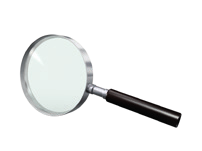
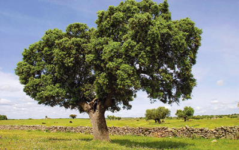
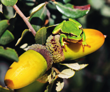
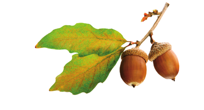

Esta otra clave dicotómica permite identificar algunos de los árboles más representativos de nuestros bosques. El otoño es la estación más propicia para su estudio, ya que se pueden observar sus bellotas características más desarrolladas.
Fruto en bellota y hojas caducas
Fruto en bellota y hojas marcescentes o perennes
Hojas marcescentes
Hojas perennes
Borde de la hoja generalmente liso y envés blanquecino
Borde de la hoja con pinchos y envés verde
Escamas de la cúpula levantadas y tronco suberoso
Escamas de la cúpula no levantadas y tronco no suberoso
Hojas duras
Hojas blandas
Borde de la hoja aserrado o dentado y envés piloso
Borde de la hoja sinuoso o festoneado y envés con pelos solo en los nervios
Borde de la hoja ligeramente lobulado; haz casi sin pelos
Borde de la hoja con lóbulos anchos y profundos; haz con pelos estrellados
Hojas con peciolo corto y bellotas pedunculadas; haz y envés sin pelos
Hojas con peciolo largo y bellotas sentadas, generalmente; haz y envés sin pelos
¿Qué necesitas?
Para observar la piloidad de las hojas, necesitas una lupa o un cuentahilos.

LupaLupa con soporte
¿Qué debes saber?
• Hoja marcescente. Es una variedad de hoja que, aunque se seca en otoño, permanece en el árbol hasta la primavera y cae antes de que broten las nuevas hojas.
• Bellota. Es el fruto de los árboles Quercus, que forman con el cáliz de la flor una cúpula con escamas.

Árbol solitario en un paisaje pastoral

Rana sobre bellota

Bellotas y hojas